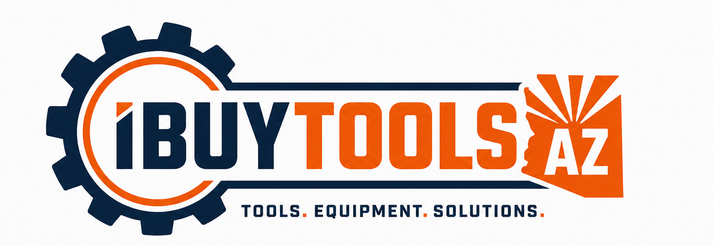

INDUSTRIAL TOOLS • MOBILE SUPPLY • LIQUIDATION
Professional-grade tools without the corporate showroom tax.
iBuyToolsAZ is building a hybrid industrial tool operation focused on
real-world tradesmen, technicians, mechanics, fabricators, and field crews.
We source and resell new and used professional tools, shop equipment,
industrial surplus, fleet buyouts, and estate liquidations across Arizona.
Future plans include the iBuyToolsAZ ToolBus:
a mobile industrial supply vehicle bringing tools, consumables,
and equipment directly to technicians, shops, industrial parks,
and job sites across the Valley.
SHOP LIQUIDATIONS
Full or partial shop cleanouts, industrial surplus,
mechanic tool collections, storage units, and estate buyouts.
NEW & USED TOOLS
Professional-grade hand tools, diagnostics,
industrial equipment, fabrication gear,
automotive specialty tools, and shop hardware.
MOBILE TOOLBUS
Planned mobile inventory routes serving
industrial areas, repair facilities,
fleet operations, and independent technicians.
LOCAL ARIZONA FOCUS
Built in Chandler, Arizona with a focus on
East Valley industry, trades, fabrication,
maintenance, HVAC, and field service work.
SITE CURRENTLY UNDER CONSTRUCTION
INITIAL OPERATIONS LAUNCHING 2026
BUY • SELL • TRADE • LIQUIDATE • SOURCE
```
A couple tactical upgrades you should seriously consider next:
* Add a "WE BUY TOOL COLLECTIONS" banner near the top. That is your lead magnet.
* Add photos of actual tools and equipment as soon as possible. Real inventory beats polished corporate stock photos every time.
* Add a future ToolBus route schedule page even before the bus exists. The myth builds before the machine arrives. 🚍
* Add a text number eventually. Techs text more than they email.
* Add phrases like "industrial surplus," "tool liquidation," "mechanic tools," and "HVAC tools" naturally throughout the site for local SEO signal.
* Eventually add a "recent acquisitions" section. Humans love peeking into tool piles like raccoons discovering a shiny carburetor.